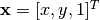
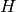
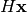
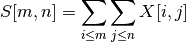

Bases: skimage.transform._geometric.ProjectiveTransform
2D affine transformation of the form:
X = a0*x + a1*y + a2 =
= sx*x*cos(rotation) - sy*y*sin(rotation + shear) + a2
Y = b0*x + b1*y + b2 =
= sx*x*sin(rotation) + sy*y*cos(rotation + shear) + b2
where sx and sy are zoom factors in the x and y directions, and the homogeneous transformation matrix is:
[[a0 a1 a2]
[b0 b1 b2]
[0 0 1]]
| Parameters : | matrix : (3, 3) array, optional
scale : (sx, sy) as array, list or tuple, optional
rotation : float, optional
shear : float, optional
translation : (tx, ty) as array, list or tuple, optional
|
|---|
Bases: skimage.transform._geometric.ProjectiveTransform
2D piecewise affine transformation.
Control points are used to define the mapping. The transform is based on a Delaunay triangulation of the points to form a mesh. Each triangle is used to find a local affine transform.
Set the control points with which to perform the piecewise mapping.
Number of source and destination coordinates must match.
| Parameters : | src : (N, 2) array
dst : (N, 2) array
|
|---|
Apply inverse transformation.
Coordinates outside of the mesh will be set to - 1.
| Parameters : | coords : (N, 2) array
|
|---|---|
| Returns : | coords : (N, 2) array
|
Bases: skimage.transform._geometric.GeometricTransform
2D transformation of the form:
X = sum[j=0:order]( sum[i=0:j]( a_ji * x**(j - i) * y**i ))
Y = sum[j=0:order]( sum[i=0:j]( b_ji * x**(j - i) * y**i ))
| Parameters : | params : (2, N) array, optional
|
|---|
Set the transformation matrix with the explicit transformation parameters.
You can determine the over-, well- and under-determined parameters with the total least-squares method.
Number of source and destination coordinates must match.
The transformation is defined as:
X = sum[j=0:order]( sum[i=0:j]( a_ji * x**(j - i) * y**i ))
Y = sum[j=0:order]( sum[i=0:j]( b_ji * x**(j - i) * y**i ))
These equations can be transformed to the following form:
0 = sum[j=0:order]( sum[i=0:j]( a_ji * x**(j - i) * y**i )) - X
0 = sum[j=0:order]( sum[i=0:j]( b_ji * x**(j - i) * y**i )) - Y
which exist for each set of corresponding points, so we have a set of N * 2 equations. The coefficients appear linearly so we can write A x = 0, where:
A = [[1 x y x**2 x*y y**2 ... 0 ... 0 -X]
[0 ... 0 1 x y x**2 x*y y**2 -Y]
...
...
]
x.T = [a00 a10 a11 a20 a21 a22 ... ann
b00 b10 b11 b20 b21 b22 ... bnn c3]
In case of total least-squares the solution of this homogeneous system of equations is the right singular vector of A which corresponds to the smallest singular value normed by the coefficient c3.
| Parameters : | src : (N, 2) array
dst : (N, 2) array
order : int, optional
|
|---|
Bases: skimage.transform._geometric.GeometricTransform
Matrix transformation.
Apply a projective transformation (homography) on coordinates.
For each homogeneous coordinate , its target position is calculated by multiplying with the given matrix, , to give :
[[a0 a1 a2]
[b0 b1 b2]
[c0 c1 1 ]].
E.g., to rotate by theta degrees clockwise, the matrix should be:
[[cos(theta) -sin(theta) 0]
[sin(theta) cos(theta) 0]
[0 0 1]]
or, to translate x by 10 and y by 20:
[[1 0 10]
[0 1 20]
[0 0 1 ]].
| Parameters : | matrix : (3, 3) array, optional
|
|---|
Set the transformation matrix with the explicit transformation parameters.
You can determine the over-, well- and under-determined parameters with the total least-squares method.
Number of source and destination coordinates must match.
The transformation is defined as:
X = (a0*x + a1*y + a2) / (c0*x + c1*y + 1)
Y = (b0*x + b1*y + b2) / (c0*x + c1*y + 1)
These equations can be transformed to the following form:
0 = a0*x + a1*y + a2 - c0*x*X - c1*y*X - X
0 = b0*x + b1*y + b2 - c0*x*Y - c1*y*Y - Y
which exist for each set of corresponding points, so we have a set of N * 2 equations. The coefficients appear linearly so we can write A x = 0, where:
A = [[x y 1 0 0 0 -x*X -y*X -X]
[0 0 0 x y 1 -x*Y -y*Y -Y]
...
...
]
x.T = [a0 a1 a2 b0 b1 b2 c0 c1 c3]
In case of total least-squares the solution of this homogeneous system of equations is the right singular vector of A which corresponds to the smallest singular value normed by the coefficient c3.
In case of the affine transformation the coefficients c0 and c1 are 0. Thus the system of equations is:
A = [[x y 1 0 0 0 -X]
[0 0 0 x y 1 -Y]
...
...
]
x.T = [a0 a1 a2 b0 b1 b2 c3]
| Parameters : | src : (N, 2) array
dst : (N, 2) array
|
|---|
Apply inverse transformation.
| Parameters : | coords : (N, 2) array
|
|---|---|
| Returns : | coords : (N, 2) array
|
Bases: skimage.transform._geometric.ProjectiveTransform
2D similarity transformation of the form:
X = a0*x - b0*y + a1 =
= m*x*cos(rotation) + m*y*sin(rotation) + a1
Y = b0*x + a0*y + b1 =
= m*x*sin(rotation) + m*y*cos(rotation) + b1
where m is a zoom factor and the homogeneous transformation matrix is:
[[a0 b0 a1]
[b0 a0 b1]
[0 0 1]]
| Parameters : | matrix : (3, 3) array, optional
scale : float, optional
rotation : float, optional
translation : (tx, ty) as array, list or tuple, optional
|
|---|
Set the transformation matrix with the explicit parameters.
You can determine the over-, well- and under-determined parameters with the total least-squares method.
Number of source and destination coordinates must match.
The transformation is defined as:
X = a0*x - b0*y + a1
Y = b0*x + a0*y + b1
These equations can be transformed to the following form:
0 = a0*x - b0*y + a1 - X
0 = b0*x + a0*y + b1 - Y
which exist for each set of corresponding points, so we have a set of N * 2 equations. The coefficients appear linearly so we can write A x = 0, where:
A = [[x 1 -y 0 -X]
[y 0 x 1 -Y]
...
...
]
x.T = [a0 a1 b0 b1 c3]
In case of total least-squares the solution of this homogeneous system of equations is the right singular vector of A which corresponds to the smallest singular value normed by the coefficient c3.
| Parameters : | src : (N, 2) array
dst : (N, 2) array
|
|---|
| skimage.transform.downscale_local_mean(...) | Down-sample N-dimensional image by local averaging. |
| skimage.transform.estimate_transform(ttype, ...) | Estimate 2D geometric transformation parameters. |
| skimage.transform.frt2(a) | Compute the 2-dimensional finite radon transform (FRT) for an n x n |
| skimage.transform.hough_circle | Perform a circular Hough transform. |
| skimage.transform.hough_ellipse | Perform an elliptical Hough transform. |
| skimage.transform.hough_line | Perform a straight line Hough transform. |
| skimage.transform.hough_line_peaks(hspace, ...) | Return peaks in hough transform. |
| skimage.transform.ifrt2(a) | Compute the 2-dimensional inverse finite radon transform (iFRT) for |
| skimage.transform.integral_image(x) | Integral image / summed area table. |
| skimage.transform.integrate(ii, r0, c0, r1, c1) | Use an integral image to integrate over a given window. |
| skimage.transform.iradon(radon_image[, ...]) | Inverse radon transform. |
| skimage.transform.iradon_sart(radon_image[, ...]) | Inverse radon transform |
| skimage.transform.probabilistic_hough_line | Return lines from a progressive probabilistic line Hough transform. |
| skimage.transform.pyramid_expand(image[, ...]) | Upsample and then smooth image. |
| skimage.transform.pyramid_gaussian(image[, ...]) | Yield images of the Gaussian pyramid formed by the input image. |
| skimage.transform.pyramid_laplacian(image[, ...]) | Yield images of the laplacian pyramid formed by the input image. |
| skimage.transform.pyramid_reduce(image[, ...]) | Smooth and then downsample image. |
| skimage.transform.radon(image[, theta, circle]) | Calculates the radon transform of an image given specified projection angles. |
| skimage.transform.rescale(image, scale[, ...]) | Scale image by a certain factor. |
| skimage.transform.resize(image, output_shape) | Resize image to match a certain size. |
| skimage.transform.rotate(image, angle[, ...]) | Rotate image by a certain angle around its center. |
| skimage.transform.swirl(image[, center, ...]) | Perform a swirl transformation. |
| skimage.transform.warp(image[, inverse_map, ...]) | Warp an image according to a given coordinate transformation. |
| skimage.transform.warp_coords(coord_map, shape) | Build the source coordinates for the output pixels of an image warp. |
Down-sample N-dimensional image by local averaging.
The image is padded with cval if it is not perfectly divisible by the integer factors.
In contrast to the 2-D interpolation in skimage.transform.resize and skimage.transform.rescale this function may be applied to N-dimensional images and calculates the local mean of elements in each block of size factors in the input image.
| Parameters : | image : ndarray
factors : array_like
cval : float, optional
|
|---|---|
| Returns : | image : ndarray
|
Estimate 2D geometric transformation parameters.
You can determine the over-, well- and under-determined parameters with the total least-squares method.
Number of source and destination coordinates must match.
| Parameters : | ttype : {‘similarity’, ‘affine’, ‘piecewise-affine’, ‘projective’, ‘polynomial’}
kwargs : array or int
|
|---|---|
| Returns : | tform : GeometricTransform
|
Examples
>>> import numpy as np
>>> from skimage import transform as tf
>>> # estimate transformation parameters
>>> src = np.array([0, 0, 10, 10]).reshape((2, 2))
>>> dst = np.array([12, 14, 1, -20]).reshape((2, 2))
>>> tform = tf.estimate_transform('similarity', src, dst)
>>> tform.inverse(tform(src)) # == src
>>> # warp image using the estimated transformation
>>> from skimage import data
>>> image = data.camera()
>>> warp(image, inverse_map=tform.inverse)
>>> # create transformation with explicit parameters
>>> tform2 = tf.SimilarityTransform(scale=1.1, rotation=1,
... translation=(10, 20))
>>> # unite transformations, applied in order from left to right
>>> tform3 = tform + tform2
>>> tform3(src) # == tform2(tform(src))
Compute the 2-dimensional finite radon transform (FRT) for an n x n integer array.
| Parameters : | a : array_like
|
|---|---|
| Returns : | FRT : 2-D ndarray
|
See also
Notes
The FRT has a unique inverse iff n is prime. [FRT] The idea for this algorithm is due to Vlad Negnevitski.
References
| [FRT] | A. Kingston and I. Svalbe, “Projective transforms on periodic discrete image arrays,” in P. Hawkes (Ed), Advances in Imaging and Electron Physics, 139 (2006) |
Examples
Generate a test image: Use a prime number for the array dimensions
>>> SIZE = 59
>>> img = np.tri(SIZE, dtype=np.int32)
Apply the Finite Radon Transform:
>>> f = frt2(img)
Perform a circular Hough transform.
| Parameters : | img : (M, N) ndarray
radius : ndarray
normalize : boolean, optional (default True)
full_output : boolean, optional (default False)
|
|---|---|
| Returns : | H : 3D ndarray (radius index, (M + 2R, N + 2R) ndarray)
|
Perform an elliptical Hough transform.
| Parameters : | img : (M, N) ndarray
threshold: int, optional (default 4) :
accuracy : double, optional (default 1)
min_size : int, optional (default 4)
max_size : int, optional
|
|---|---|
| Returns : | result : ndarray with fields [(accumulator, y0, x0, a, b, orientation)]
|
Notes
The accuracy must be chosen to produce a peak in the accumulator distribution. In other words, a flat accumulator distribution with low values may be caused by a too low bin size.
References
| [R237] | Xie, Yonghong, and Qiang Ji. “A new efficient ellipse detection method.” Pattern Recognition, 2002. Proceedings. 16th International Conference on. Vol. 2. IEEE, 2002 |
Examples
>>> img = np.zeros((25, 25), dtype=np.uint8)
>>> rr, cc = ellipse_perimeter(10, 10, 6, 8)
>>> img[cc, rr] = 1
>>> result = hough_ellipse(img, threshold=8)
[(10, 10.0, 8.0, 6.0, 0.0, 10.0)]
Perform a straight line Hough transform.
| Parameters : | img : (M, N) ndarray
theta : 1D ndarray of double
|
|---|---|
| Returns : | H : 2-D ndarray of uint64
theta : ndarray
distances : ndarray
|
Notes
The origin is the top left corner of the original image. X and Y axis are horizontal and vertical edges respectively. The distance is the minimal algebraic distance from the origin to the detected line.
Examples
Generate a test image:
>>> img = np.zeros((100, 150), dtype=bool)
>>> img[30, :] = 1
>>> img[:, 65] = 1
>>> img[35:45, 35:50] = 1
>>> for i in range(90):
... img[i, i] = 1
>>> img += np.random.random(img.shape) > 0.95
Apply the Hough transform:
>>> out, angles, d = hough_line(img)
import numpy as np
import matplotlib.pyplot as plt
from skimage.transform import hough_line
from skimage.draw import line
img = np.zeros((100, 150), dtype=bool)
img[30, :] = 1
img[:, 65] = 1
img[35:45, 35:50] = 1
rr, cc = line(60, 130, 80, 10)
img[rr, cc] = 1
img += np.random.random(img.shape) > 0.95
out, angles, d = hough_line(img)
plt.subplot(1, 2, 1)
plt.imshow(img, cmap=plt.cm.gray)
plt.title('Input image')
plt.subplot(1, 2, 2)
plt.imshow(out, cmap=plt.cm.bone,
extent=(np.rad2deg(angles[-1]), np.rad2deg(angles[0]),
d[-1], d[0]))
plt.title('Hough transform')
plt.xlabel('Angle (degree)')
plt.ylabel('Distance (pixel)')
plt.subplots_adjust(wspace=0.4)
plt.show()
(Source code, png, pdf)
Return peaks in hough transform.
Identifies most prominent lines separated by a certain angle and distance in a hough transform. Non-maximum suppression with different sizes is applied separately in the first (distances) and second (angles) dimension of the hough space to identify peaks.
| Parameters : | hspace : (N, M) array
angles : (M,) array
dists : (N, ) array
min_distance : int
min_angle : int
threshold : float
num_peaks : int
|
|---|---|
| Returns : | hspace, angles, dists : tuple of array
|
Examples
>>> import numpy as np
>>> from skimage.transform import hough_line, hough_peaks
>>> from skimage.draw import line
>>> img = np.zeros((15, 15), dtype=np.bool_)
>>> rr, cc = line(0, 0, 14, 14)
>>> img[rr, cc] = 1
>>> rr, cc = line(0, 14, 14, 0)
>>> img[cc, rr] = 1
>>> hspace, angles, dists = hough_line(img)
>>> hspace, angles, dists = hough_peaks(hspace, angles, dists)
>>> angles
array([ 0.74590887, -0.79856126])
>>> dists
array([ 10.74418605, 0.51162791])
Compute the 2-dimensional inverse finite radon transform (iFRT) for an (n+1) x n integer array.
| Parameters : | a : array_like
|
|---|---|
| Returns : | iFRT : 2-D n x n ndarray
|
See also
Notes
The FRT has a unique inverse iff n is prime. See [R238] for an overview. The idea for this algorithm is due to Vlad Negnevitski.
References
| [R238] | (1, 2) A. Kingston and I. Svalbe, “Projective transforms on periodic discrete image arrays,” in P. Hawkes (Ed), Advances in Imaging and Electron Physics, 139 (2006) |
Examples
>>> SIZE = 59
>>> img = np.tri(SIZE, dtype=np.int32)
Apply the Finite Radon Transform:
>>> f = frt2(img)
Apply the Inverse Finite Radon Transform to recover the input
>>> fi = ifrt2(f)
Check that it’s identical to the original
>>> assert len(np.nonzero(img-fi)[0]) == 0
Integral image / summed area table.
The integral image contains the sum of all elements above and to the left of it, i.e.:

| Parameters : | x : ndarray
|
|---|---|
| Returns : | S : ndarray
|
References
| [R239] | F.C. Crow, “Summed-area tables for texture mapping,” ACM SIGGRAPH Computer Graphics, vol. 18, 1984, pp. 207-212. |
Use an integral image to integrate over a given window.
| Parameters : | ii : ndarray
r0, c0 : int or ndarray
r1, c1 : int or ndarray
|
|---|---|
| Returns : | S : scalar or ndarray
|
Inverse radon transform.
Reconstruct an image from the radon transform, using the filtered back projection algorithm.
| Parameters : | radon_image : array_like, dtype=float
theta : array_like, dtype=float, optional
output_size : int
filter : str, optional (default ramp)
interpolation : str, optional (default ‘linear’)
circle : boolean, optional
|
|---|---|
| Returns : | reconstructed : ndarray
|
Notes
It applies the Fourier slice theorem to reconstruct an image by multiplying the frequency domain of the filter with the FFT of the projection data. This algorithm is called filtered back projection.
Inverse radon transform
Reconstruct an image from the radon transform, using a single iteration of the Simultaneous Algebraic Reconstruction Technique (SART) algorithm.
| Parameters : | radon_image : 2D array, dtype=float
theta : 1D array, dtype=float, optional
image : 2D array, dtype=float, optional
projection_shifts : 1D array, dtype=float
clip : length-2 sequence of floats
relaxation : float
|
|---|---|
| Returns : | reconstructed : ndarray
|
Notes
Algebraic Reconstruction Techniques are based on formulating the tomography reconstruction problem as a set of linear equations. Along each ray, the projected value is the sum of all the values of the cross section along the ray. A typical feature of SART (and a few other variants of algebraic techniques) is that it samples the cross section at equidistant points along the ray, using linear interpolation between the pixel values of the cross section. The resulting set of linear equations are then solved using a slightly modified Kaczmarz method.
When using SART, a single iteration is usually sufficient to obtain a good reconstruction. Further iterations will tend to enhance high-frequency information, but will also often increase the noise.
References
| [R240] | AC Kak, M Slaney, “Principles of Computerized Tomographic Imaging”, IEEE Press 1988. |
| [R241] | AH Andersen, AC Kak, “Simultaneous algebraic reconstruction technique (SART): a superior implementation of the ART algorithm”, Ultrasonic Imaging 6 pp 81–94 (1984) |
| [R242] | S Kaczmarz, “Angenäherte auflösung von systemen linearer gleichungen”, Bulletin International de l’Academie Polonaise des Sciences et des Lettres 35 pp 355–357 (1937) |
| [R243] | Kohler, T. “A projection access scheme for iterative reconstruction based on the golden section.” Nuclear Science Symposium Conference Record, 2004 IEEE. Vol. 6. IEEE, 2004. |
| [R244] | Kaczmarz’ method, Wikipedia, http://en.wikipedia.org/wiki/Kaczmarz_method |
Return lines from a progressive probabilistic line Hough transform.
| Parameters : | img : (M, N) ndarray
threshold : int, optional (default 10)
line_length : int, optional (default 50)
line_gap : int, optional, (default 10)
theta : 1D ndarray, dtype=double, optional, default (-pi/2 .. pi/2)
|
|---|---|
| Returns : | lines : list
|
References
| [R245] | C. Galamhos, J. Matas and J. Kittler, “Progressive probabilistic Hough transform for line detection”, in IEEE Computer Society Conference on Computer Vision and Pattern Recognition, 1999. |
Upsample and then smooth image.
| Parameters : | image : array
upscale : float, optional
sigma : float, optional
order : int, optional
mode : {‘reflect’, ‘constant’, ‘nearest’, ‘mirror’, ‘wrap’}, optional
cval : float, optional
|
|---|---|
| Returns : | out : array
|
References
| [R246] | http://web.mit.edu/persci/people/adelson/pub_pdfs/pyramid83.pdf |
Yield images of the Gaussian pyramid formed by the input image.
Recursively applies the pyramid_reduce function to the image, and yields the downscaled images.
Note that the first image of the pyramid will be the original, unscaled image. The total number of images is max_layer + 1. In case all layers are computed, the last image is either a one-pixel image or the image where the reduction does not change its shape.
| Parameters : | image : array
max_layer : int
downscale : float, optional
sigma : float, optional
order : int, optional
mode : {‘reflect’, ‘constant’, ‘nearest’, ‘mirror’, ‘wrap’}, optional
cval : float, optional
|
|---|---|
| Returns : | pyramid : generator
|
References
| [R247] | http://web.mit.edu/persci/people/adelson/pub_pdfs/pyramid83.pdf |
Yield images of the laplacian pyramid formed by the input image.
Each layer contains the difference between the downsampled and the downsampled, smoothed image:
layer = resize(prev_layer) - smooth(resize(prev_layer))
Note that the first image of the pyramid will be the difference between the original, unscaled image and its smoothed version. The total number of images is max_layer + 1. In case all layers are computed, the last image is either a one-pixel image or the image where the reduction does not change its shape.
| Parameters : | image : array
max_layer : int
downscale : float, optional
sigma : float, optional
order : int, optional
mode : {‘reflect’, ‘constant’, ‘nearest’, ‘mirror’, ‘wrap’}, optional
cval : float, optional
|
|---|---|
| Returns : | pyramid : generator
|
References
| [R248] | http://web.mit.edu/persci/people/adelson/pub_pdfs/pyramid83.pdf |
| [R249] | http://sepwww.stanford.edu/~morgan/texturematch/paper_html/node3.html |
Smooth and then downsample image.
| Parameters : | image : array
downscale : float, optional
sigma : float, optional
order : int, optional
mode : {‘reflect’, ‘constant’, ‘nearest’, ‘mirror’, ‘wrap’}, optional
cval : float, optional
|
|---|---|
| Returns : | out : array
|
References
| [R250] | http://web.mit.edu/persci/people/adelson/pub_pdfs/pyramid83.pdf |
Calculates the radon transform of an image given specified projection angles.
| Parameters : | image : array_like, dtype=float
theta : array_like, dtype=float, optional (default np.arange(180))
circle : boolean, optional
|
|---|---|
| Returns : | radon_image : ndarray
|
| Raises : | ValueError :
|
Scale image by a certain factor.
Performs interpolation to upscale or down-scale images. For down-sampling N-dimensional images with integer factors by applying the arithmetic sum or mean, see skimage.measure.local_sum and skimage.transform.downscale_local_mean, respectively.
| Parameters : | image : ndarray
scale : {float, tuple of floats}
|
|---|---|
| Returns : | scaled : ndarray
|
Examples
>>> from skimage import data
>>> from skimage.transform import rescale
>>> image = data.camera()
>>> rescale(image, 0.1).shape
(51, 51)
>>> rescale(image, 0.5).shape
(256, 256)
Resize image to match a certain size.
Performs interpolation to up-size or down-size images. For down-sampling N-dimensional images by applying the arithmetic sum or mean, see skimage.measure.local_sum and skimage.transform.downscale_local_mean, respectively.
| Parameters : | image : ndarray
output_shape : tuple or ndarray
|
|---|---|
| Returns : | resized : ndarray
|
Examples
>>> from skimage import data
>>> from skimage.transform import resize
>>> image = data.camera()
>>> resize(image, (100, 100)).shape
(100, 100)
Rotate image by a certain angle around its center.
| Parameters : | image : ndarray
angle : float
resize : bool, optional
|
|---|---|
| Returns : | rotated : ndarray
|
Examples
>>> from skimage import data
>>> from skimage.transform import rotate
>>> image = data.camera()
>>> rotate(image, 2).shape
(512, 512)
>>> rotate(image, 2, resize=True).shape
(530, 530)
>>> rotate(image, 90, resize=True).shape
(512, 512)
Perform a swirl transformation.
| Parameters : | image : ndarray
center : (x,y) tuple or (2,) ndarray, optional
strength : float, optional
radius : float, optional
rotation : float, optional
|
|---|---|
| Returns : | swirled : ndarray
|
Warp an image according to a given coordinate transformation.
| Parameters : | image : 2-D or 3-D array
inverse_map : transformation object, callable xy = f(xy, **kwargs), (3, 3) array
map_args : dict, optional
output_shape : tuple (rows, cols), optional
order : int, optional
mode : string, optional
cval : float, optional
|
|---|
Notes
In case of a SimilarityTransform, AffineTransform and ProjectiveTransform and order in [0, 3] this function uses the underlying transformation matrix to warp the image with a much faster routine.
Examples
>>> from skimage.transform import warp
>>> from skimage import data
>>> image = data.camera()
The following image warps are all equal but differ substantially in execution time.
Use a geometric transform to warp an image (fast):
>>> from skimage.transform import SimilarityTransform
>>> tform = SimilarityTransform(translation=(0, -10))
>>> warp(image, tform)
Shift an image to the right with a callable (slow):
>>> def shift(xy):
... xy[:, 1] -= 10
... return xy
>>> warp(image, shift_right)
Use a transformation matrix to warp an image (fast):
>>> matrix = np.array([[1, 0, 0], [0, 1, -10], [0, 0, 1]])
>>> warp(image, matrix)
>>> from skimage.transform import ProjectiveTransform
>>> warp(image, ProjectiveTransform(matrix=matrix))
You can also use the inverse of a geometric transformation (fast):
>>> warp(image, tform.inverse)
Build the source coordinates for the output pixels of an image warp.
| Parameters : | coord_map : callable like GeometricTransform.inverse
shape : tuple
dtype : np.dtype or string
|
|---|---|
| Returns : | coords : (ndim, rows, cols[, bands]) array of dtype dtype
|
Notes
This is a lower-level routine that produces the source coordinates used by warp().
It is provided separately from warp to give additional flexibility to users who would like, for example, to re-use a particular coordinate mapping, to use specific dtypes at various points along the the image-warping process, or to implement different post-processing logic than warp performs after the call to ndimage.map_coordinates.
Examples
Produce a coordinate map that Shifts an image up and to the right:
>>> from skimage import data
>>> from scipy.ndimage import map_coordinates
>>>
>>> def shift_up10_left20(xy):
... return xy - np.array([-20, 10])[None, :]
>>>
>>> image = data.lena().astype(np.float32)
>>> coords = warp_coords(shift_up10_left20, image.shape)
>>> warped_image = map_coordinates(image, coords)
{kind=link}